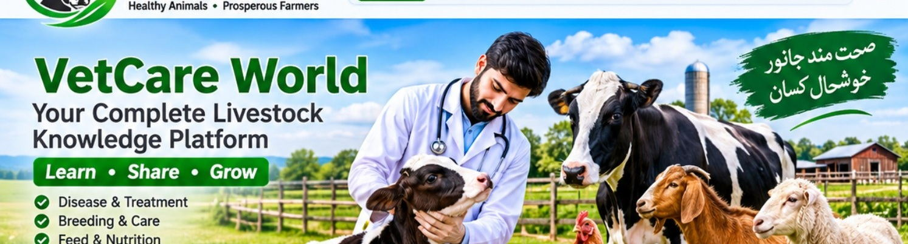

What the Earning Centre Is
The Earning Centre explains legitimate ways livestock farmers, breeders, traders and veterinary workers can build income from their knowledge, their animals and their services. It is an education page, not a promise: every opportunity described here depends on your own work, your skills, your local market and conditions you cannot control, such as feed prices, weather and disease outbreaks.
There are no shortcuts here and no guaranteed results. The farmers who do well over time are usually the ones who keep learning, keep good records, look after their animals' health, and build a reputation for honest dealing. This page will help you understand each opportunity clearly so you can decide for yourself what fits your situation.
If you are already a VetCare World member, you can also use the Earning Centre section on the homepage for quick links to the Marketplace, the communities and the Learning Library.
Dairy Farming Income Basics
Dairy farming is the most common livestock livelihood in Pakistan: milk is sold daily, so a well-managed dairy herd can provide regular cash flow for a family. How well a dairy farm does depends on several linked factors — the breed and health of the animals, the quality and cost of feed and fodder, clean milking and milk handling, and a reliable buyer or market for the milk.

Feed is usually the largest running cost on a dairy farm, so learning to balance green fodder, dry fodder and concentrate feed matters as much as the animals themselves. Healthy animals produce more milk and need fewer treatments, which is why vaccination, deworming and clean housing are not expenses to avoid but part of protecting the farm's income.
Keeping simple daily records — milk collected, feed given, treatments and costs — shows you honestly whether the farm is moving forward. Without records, it is easy to mistake busy work for real progress.
Learn more: Dairy Cattle Feeding · Farm Management · Mastitis in Cattle · Milk Fever · Vaccination & Prevention
Livestock Breeding
Breeding is a long-term opportunity: a farmer who selects good breeding animals and rears their calves well can gradually build a stronger, more productive herd. Good breeding starts with choosing healthy animals with sound body condition, good udders and teats in dairy animals, and a known history where possible. Keeping breeding records — which bull or semen was used, service dates, calving dates and calf performance — turns guesswork into planned improvement.
Breeding rewards patience. A calf takes time to grow into a productive animal, and not every mating results in a pregnancy. Heat detection, timely service, proper nutrition of pregnant animals and careful calving management all decide whether a breeding programme succeeds. Rushing the process or neglecting pregnant animals usually costs more than it saves.
Learn more: Breeding Management & Selection in Cattle · Calf Feeding & Management · Artificial Insemination in Cattle
Livestock Trading
Livestock trading means buying animals and selling them — for example, buying young animals, rearing and fattening them, and selling when they reach a good weight and condition, or buying and selling breeding animals between farmers. Traders earn from the difference between buying and selling prices, but that difference depends on market prices on the day, transport costs, feed costs while animals are held, and the animals staying healthy.
Successful trading rests on three skills: judging an animal's health and age correctly, knowing the local market and seasonal price patterns, and dealing honestly so buyers return. Always examine an animal carefully before buying — its eyes, teeth, body condition, legs, udder and behaviour — and ask about its vaccination and treatment history. Buying a sick or misrepresented animal can wipe out the margin on many good deals.
Transport, handling and paperwork also matter. Animals must be moved safely, with water, rest and care, and local rules about animal movement and markets should always be followed. New traders should start with a small number of animals they can manage well, and learn the market before scaling up.
You can list animals for sale in the VetCare World Marketplace and discuss trading in the Livestock Traders community.
Artificial Insemination (AI) Services
Artificial insemination is a skilled service: trained AI technicians help farmers breed their cattle and buffalo using semen from selected bulls, without keeping a bull on the farm. Farmers value a technician who arrives on time when a cow is in heat, handles semen correctly, keeps clean equipment and keeps accurate service records.
AI work requires proper training — understanding heat signs, correct thawing and handling of semen, hygienic technique, pregnancy diagnosis follow-up and honest record keeping. It is a service farmers pay for because good AI improves their herd's genetics and helps them plan calvings, but results still depend on the animal's health, nutrition and the timing of the service.
Anyone offering AI services should be properly trained and qualified, use semen only from trusted sources, maintain the cold chain for stored semen, and never promise a pregnancy — conception depends on many factors beyond the technician's control.
Learn more: Artificial Insemination in Cattle · Breeding Management & Selection in Cattle
Educational Content Creation
Farmers and veterinary professionals who explain their real experience clearly — how they manage feeding, treat common problems, or run their farm day to day — can build an audience that values honest, practical knowledge. Content can take many forms: short videos, photos with clear explanations, written guides or answering questions in a community.
Good educational content is accurate, shows real animals and real work, and never exaggerates. Viewers trust creators who show both successes and problems honestly, and who correct their mistakes openly. Building an audience takes steady, regular effort over a long time; there is no quick route to a loyal following.
On VetCare World you can start by posting useful knowledge in the communities, where farmers, veterinary doctors and students discuss real cases. Sharing genuinely helpful posts builds your name in the community far better than self-promotion.
Veterinary Educational Resources
Well-made educational resources — guides, lectures, illustrated notes and clinical pictures — help farmers and students learn at their own pace. VetCare World's Learning Library is a free public collection of such resources, and the Knowledge Centre organises disease guides and topic pages for easy study.
Members who create clear, accurate learning material contribute to the whole community. Before sharing any resource, check that the information is correct, that pictures and text are your own work or properly permitted, and that doses and treatments follow accepted veterinary guidance. Educational material must never replace examination of a sick animal by a qualified veterinarian.
Selling on the VetCare World Marketplace
The VetCare World Marketplace is where members list animals, feed, veterinary products and farm equipment for other farmers to see. A good listing is honest and complete: clear, recent photos of the actual animal or item, an accurate description, the location, and a fair asking price.
Listings are moderated by the site administrators, and buyers and sellers arrange the sale directly between themselves. VetCare World does not handle payments, does not inspect animals, and does not take part in the transaction — so both sides should check animals and goods carefully before agreeing a deal, meet in safe public places where possible, and keep written records of what was agreed.
Honest sellers who describe their animals accurately, answer questions promptly and keep their word build repeat buyers. Misleading photos or descriptions damage a seller's reputation quickly and can lead to removal from the Marketplace.
Future Creator & Member Opportunities
VetCare World is growing, and new opportunities for members and creators may be added in the future — for example, ways for trusted community members to offer services, teach, or share their work with a wider audience through the platform. Any such opportunity will be announced on the website when it is genuinely ready, with clear terms that members can read before taking part.
Until then, the best preparation is the same as ever: keep learning, keep your animals healthy, share honest knowledge, and build a good name in the community. Members who are already known for useful, trustworthy contributions will always be best placed for whatever comes next.
For one-to-one veterinary advice today, see our Online Consultation service, where you can book a consultation with a qualified veterinarian.
Before You Start: An Honest Checklist
- Learn first. Study the topic in the Knowledge Centre and Learning Library before investing time or money.
- Start small. Begin with a scale you can manage well, and grow only when the basics are working.
- Put animal health first. Vaccination, clean water and feed, and prompt treatment protect both animals and income.
- Keep records. Write down costs, sales, services and results so decisions are based on facts, not memory.
- Know your local market. Prices, buyers and demand differ by area and season — check locally before committing.
- Deal honestly. Accurate descriptions, fair dealing and keeping your word build the reputation every lasting livelihood needs.
- Follow local rules. Respect animal movement, market and veterinary regulations in your area.
- Ask a veterinarian. For health, breeding and treatment decisions, professional advice is worth more than guesswork — see Online Consultation.
Related Guides
Marketplace · Farmer Communities · Learning Library · Earning Centre (Homepage) · Online Consultation · Farm Management · Dairy Cattle Feeding · Breeding Management & Selection · Artificial Insemination in Cattle · Vaccination & Prevention · Knowledge Centre · Veterinary Library · About VetCare World
⚠️ Important disclaimer: This page is general educational information only. VetCare World guarantees no income and promises no earnings from any opportunity described here. Any income depends on your own work, skills, effort, costs, local market conditions and factors outside anyone's control. Nothing on this page is financial advice. Always seek qualified veterinary advice for animal health decisions, and check local rules before buying, selling or offering services.
✍️ Written by Dr. Shahid Bilal Depal, DVM (PVMC RVMP #15068)
This guide is for educational purposes. Consult a registered veterinarian for diagnosis and treatment.